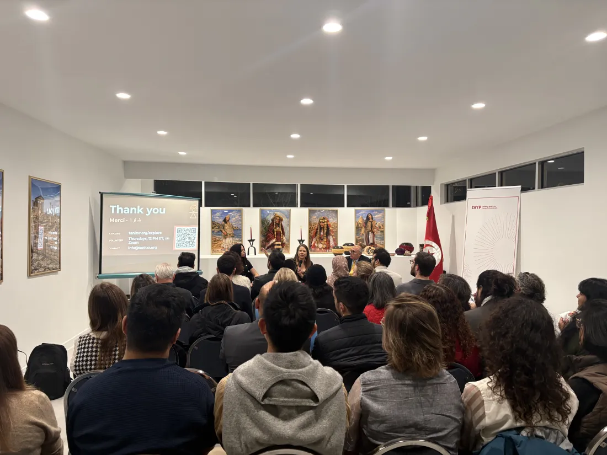
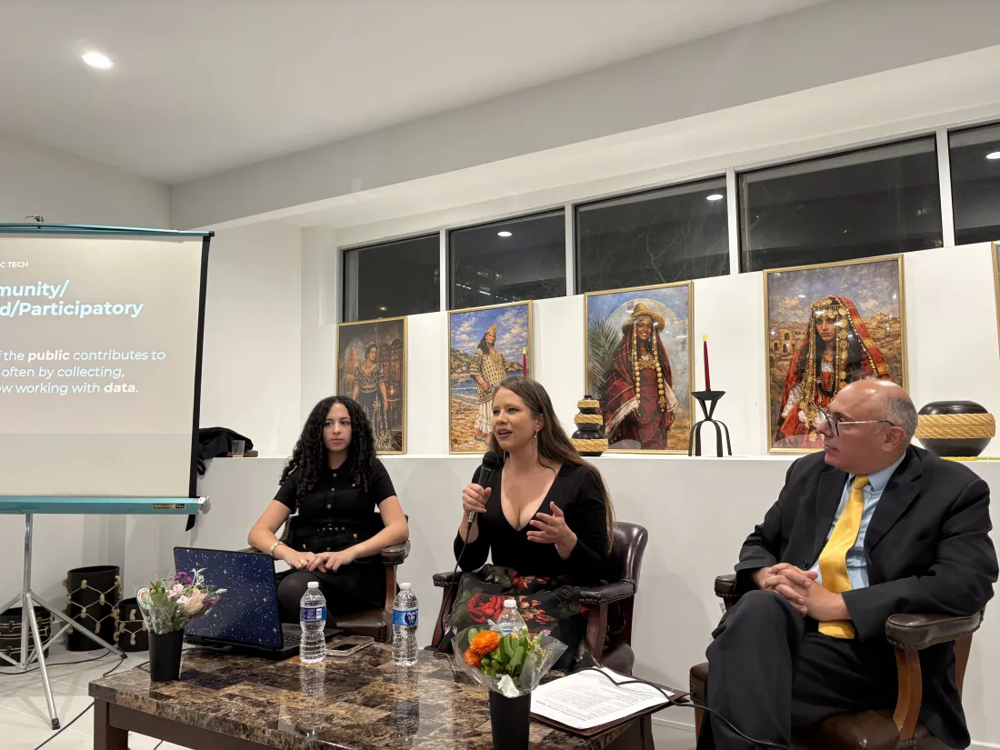
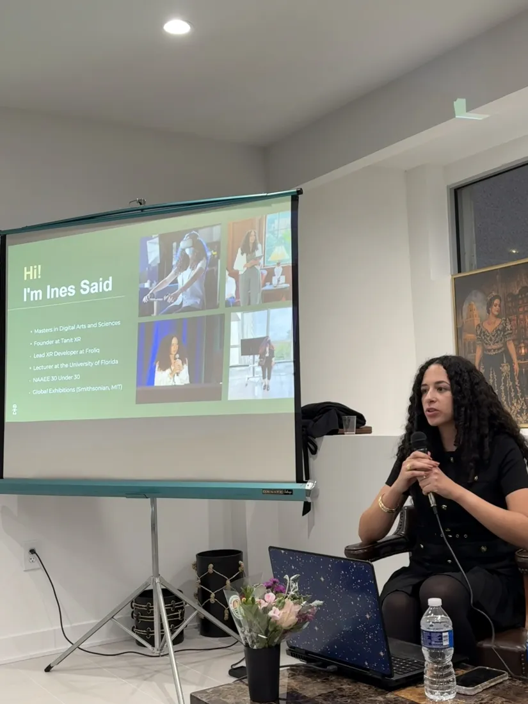
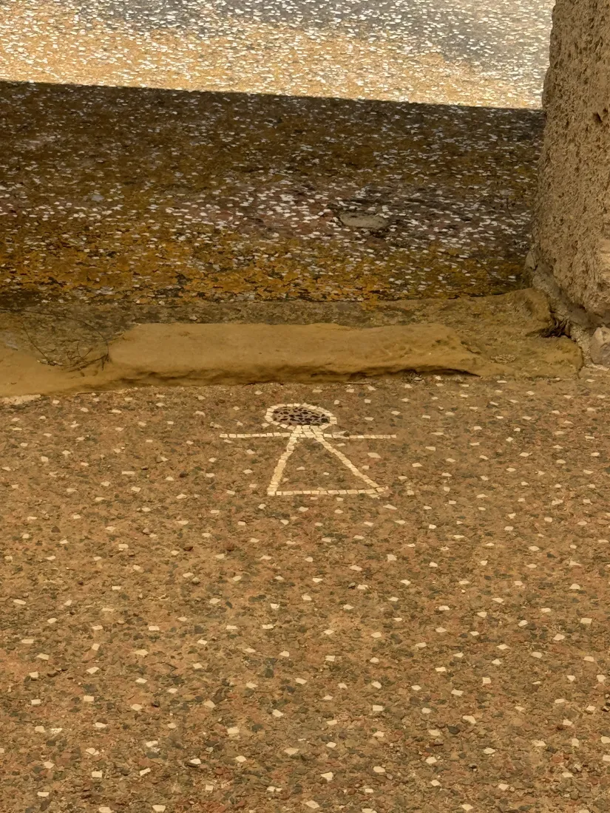

On Friday 23 October the Embassy of Tunisia opened its doors for an evening hosted with Tanit XR and TAYP. Ines Said told the story of why a Tunisian developer started scanning Carthage with a phone and showed the collection live. Dr. Caroline Nickerson spoke about her year with Tanit XR and her time in Tunisia this summer. Then the headsets came out, and guests stood inside the collection.
Our thanks to the Embassy of Tunisia for hosting us, to TAYP for co-organising, and to everyone who came, asked questions and tried the collection.



Over the past year, Dr. Caroline Nickerson has been at the centre of Tanit XR: building partnerships with universities and institutions, running hackathons and workshops, and travelling to Tunisia this summer with Dr. Laura Harrison to work alongside Tunisian colleagues at the sites themselves. She will talk about that year, what she saw, and where it goes next. Ines Said, who founded Tanit XR, opens the evening with the story of why a Tunisian developer started scanning Carthage with a phone, and shows the collection live.
Tanit XR documents Tunisian heritage with photogrammetry, lidar and Gaussian splatting, much of it captured on ordinary phones by trained volunteers, and brings the results to anyone in the world through a browser, a headset or a virtual museum. The collection is already open at tanitxr.org/explore, and VR headsets will be in the room for anyone who would like to stand inside it.
Tanit XR is run by volunteers in many countries, most of whom had no connection to Tunisia when they joined. They meet every week, study Tunisian history together, and several have since travelled to Tunisia or now speak about its heritage in their own cities. That exchange, with technology as the bridge, is what the evening is about. Tunisians and friends of Tunisia equally welcome; students very welcome; no technical background needed.
Executive Director and co-founder of Florida Community Innovation, the nonprofit that serves as Tanit XR's fiscal sponsor. Her work brings together civic engagement, public interest technology and citizen science, including roles with SciStarter, CitSci and the NASA-funded EMERGE project. She holds a PhD in Agricultural Education and Communication from the University of Florida and a Master of Public Policy from American University.
A Tunisian XR artist and developer from Nabeul. Her work has been shown in the Smithsonian's FUTURES exhibition, she is a 2026 Auggie Awards finalist, one of NAAEE's 30 Under 30, and a speaker at AWE. She founded Tanit XR to put Tunisia's heritage in the hands of anyone, anywhere, and built the volunteer community that now does it. She opens the evening and shows the collection live.
